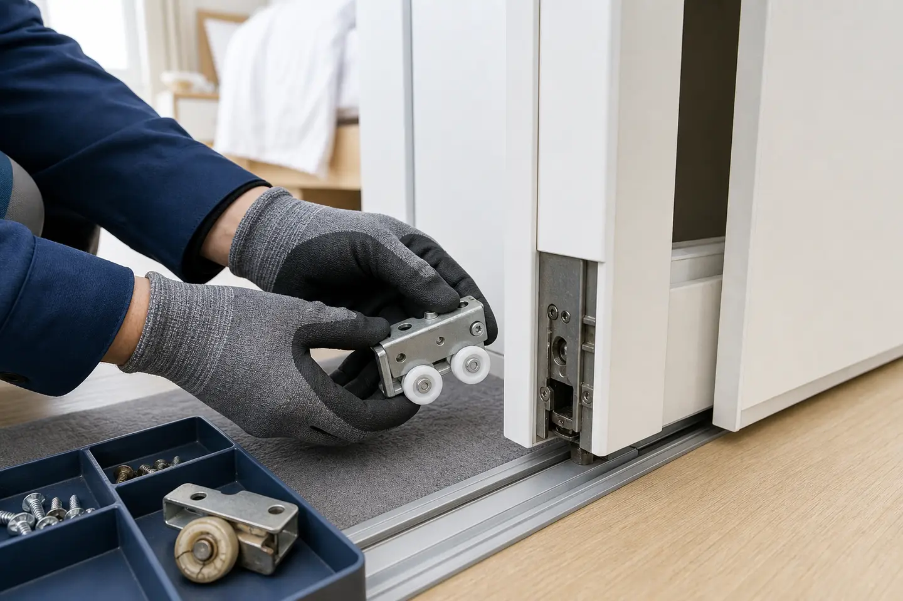

안녕하세요 홍프로입니다 오늘은 수원에 위치한 현장을 방문해 붙박이장을 수리한 현장을 소개해 드리겠습니다
이번 작업의 확인 포인트
문 처짐과 레일 간섭을 확인하고 파손되거나 마모된 롤러를 교체한 뒤 문짝 높이와 좌우 간격을 맞춥니다.

안녕하세요 홍프로입니다
오늘은 수원에 위치한 현장을 방문해
붙박이장을 수리한 현장을
소개해 드리겠습니다

사전의뢰시 붙박이장이 안쪽에서
꽉끼고 움직이지 않는 상태라고
사진과 함께 수리의뢰를 하셨습니다
현장사진과 고장증상을 파악한 뒤
고객님께 고장원인으로 생각되는
내용을 공유한 뒤 필요한 자재를
모두 챙겨 현장을 방문
했습니다
꽉낀 도어가 빠지지 않을까 걱정하는
고객님을 안심시켜드리고
부품교체로 수리가 가능해 보인다고
공유드린뒤 현장을 방문했습니다
붙박이장 수리를 끝낸 작업과정을
공유해 드리겠습니다
모든 수리는 홍프로가 직접 진행하며
도어수리는 1시간 전후로 소요됩니다
안쪽도어가 꽉끼어버려 도어 두개가
힘을 줘도 전혀 움직이지 않습니다
이런 문처짐 현상은 무거운 도어일수록
동일유형의 고장증상이 더 빨리 생깁니다
도어에 조립된 부품이 레일홈과 조립되
움직여야 하는데 도어가 무거운 탓에
레일에서 이탈된 상태로 보입니다

무거운 도어가 안쪽에 낀채로
수리를 하지 않게되면 도어에 변형이
생기거나 바깥쪽 도어가 떨어져
이탈이 생길 수 있습니다
무거운 도어가 떨어지면 안전사고
위험과 전체교제를 해야되는
상황이 생길 수 있습니다
도어가 전과 다른 이상이 확인되고
소리가 나기 시작했다면
고장이 생기기 시작한 상태로
점검을 받아보시는게 좋습니다


붙박이장을 열고 닫는게 불가능한
경우는 안에 있는 옷과 물품들을
꺼낼 수가 없어 당황스럽고 매우
불편하시게 됩니다
겨울철 외투도 꺼내입으셔야 하는데
사용을 할 수 없어 난감하시다는
연락을 받고 일정조율해
빠르게 당일방문해드렸습니다

일단 도어를 분리해 상부에
조립된 부품상태를 확인해보았습니다
붙박이장도어가 매우 무겁게
제작되어 도어를 분리시에 억지로
힘을 줘서 빼내시려고 하면
조립된 부품이 파손되거나 문에
손상이 생길 수도 있습니다
오랜 노하우를 이용해 도어에
손상이 가지 않게 분리
해주었습니다


도어상부 롤러가 모두 고장난 상태입니다
한쪽은 파손되어 이탈된 상태이며
반대뽁은 금이가고 깨진 상태입니다
롤러는 플라스틱으로 제작되어
오래 사용하다 보면 고장이 나고
교체가 필요한 상황이 생깁니다
영구적으로 사용가능한 부품이
아니기 때문에 사용시 충격을 줄여주시면
일반적인 사용기간보다 오래
사용하실 수 있습니다


수리를 위해 하드웨어를
전용공구로 분리해 주었습니다
미닫이 형태의 도어를 사용하실때는
충격을 받지 않게 조심히
사용해 주셔야 합니다
여닫이 문은 형태가 간단하고
부품이 고장나는 경우가 거의 없지만
미닫의 문은 여러 부품이 조립되고
조립되는 부품이 영구적이지 않습니다


고장난 롤러를 분리한 뒤 새 롤러를
조립해 주었습니다
기존 롤러와 동일한 규격의 롤러를
준비해가 조립해준 뒤
윤활제를 도포해 주었습니다
롤러가 슬라이딩 되면서 레일과
지속적으로 마찰이 되기 때문에
윤활제를 도포해 주면
마찰을 줄일 수 있습니다


조립을 끝낸 부품이 부드럽게
움직이는지 도어에 조립하기 전
한번 더 점검해 준 뒤 기존자리에
수평을 맞춰 조립해 주었습니다

레일에 이물질이 끼어 있는지
확인해보니 깨진 롤러조각이 있습니다
레일에 플라스틱 조각과 같은
이물질이 있으면 롤러에 끼거나
움직일때 덜컹거리게 되면서
충격이 전해져 롤러가 파손되거나
다른 문제가 생길 수 있습니다
레일을 확인해 끼어있는 이물질과
롤러조각을 깨끗하게 제거해 주었습니다


수리를 끝낸 도어를 상부레일홈에 맞춰
조립해 주었습니다
붙박이장 도어는 분리도 어렵지만
재조립도 기술이 필요합니다
도어무게가 무거운데 한번에
레일홈에 제대로 장착해야
부품손상이 발생하지 않기 때문에
오랜 노하우를 이용해 한번에
레일홈에 맞춰 조립
하고 있습니다

조립 후 상하부 레일홈에 잘 맞춰
조립되었는지 내부장과 도어와의
간격은 적당한지 확인해 주었습니다
상하부 롤러가 레일홈에 잘 맞게
조립되었습니다


조립 후 도어의 수평은 잘 맞는지
이격이 발생한 곳은 있는지
확인해본 뒤 천천히 움직여 보며
문제없이 조립되었는지 확인했습니다
슬라이딩 붙박이장은 작은힘으로
개폐가 가능해야합니다
처음에만 살짝 힘을 주서 열면
부드럽게 슬라이딩 되어 끝에서
속도를 줄이며 닫히는지 확인해야 합니다
고객님께도 붙박이장이
이전 사용시와 비교해서 달라진
부분이 있는지 불편하게
느껴지시는 점이 있는지 여러번
움직여보며 확인해보시게 했습니다
수리전보다 훨씬 부드럽고
마찰음이 들리던 것도 없어졌다고
굉장히 만족해 하셨습니다

붙박이장이 이전과 다르게
소리가 들리거나 사용할때 부드럽게
움직이지 않고 힘이 들어간다면
점검과 수리가 필요한 상태입니다
전문가에게 한번 수리를 받으시면
전반적으로 점검을 하실 수 있어
수리 후 오래기간 고장없이
사용이 가능하십니다
붙박이장/현관중문/기타도어
고장으로 불편을 겪고 계시다면
도어수리 전문가
홍프로 집박사에 문의부탁드립니다

문의가 필요하신 경우
전화나 문자 편하신 방법으로
홍프로에 문의 부탁드립니다
현장사진 2~3장과 고장증상을
함께 보내주시면 현장파악에
많은 도움이되며
확인 후 바로 연락드리고 있으니
부담없이 문의부탁드립니다

서울 경기 천안 아산
수도권 전지역 방문가능합니다
분당 판교 용인 수지 반포
서초 하남 미사 동탄 수원
영통 안산 시흥 구리 과천
광교 천안 아산 인천 검단
송도 향냠 고덕 오산 세교
잠실 중랑 노원 강북 강남
위 지역외에도
방문이 필요한 곳은 문의바랍니다